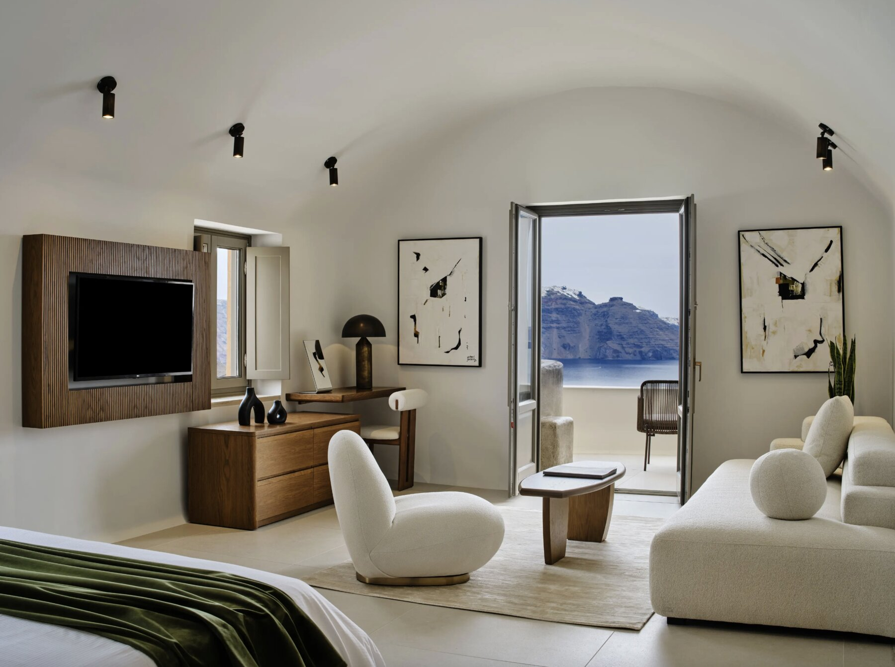
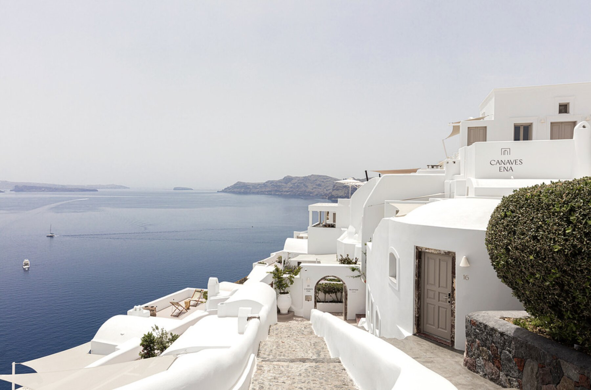
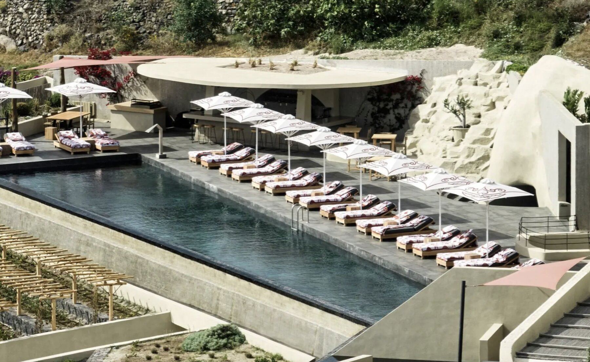
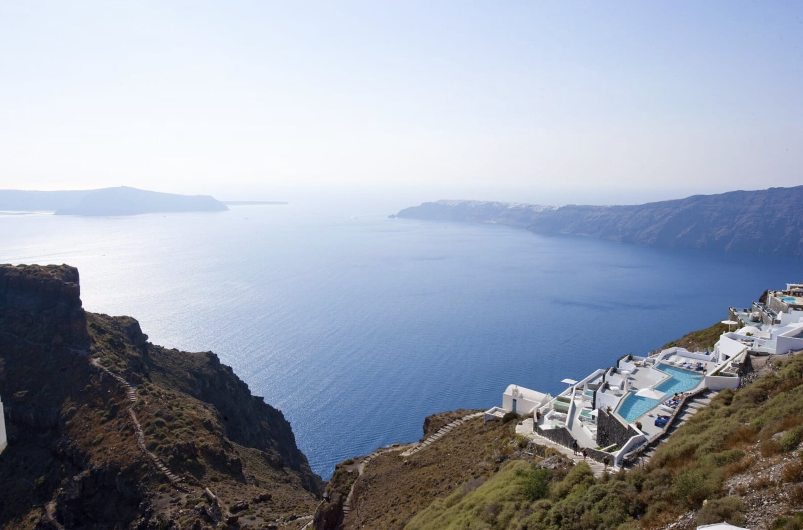
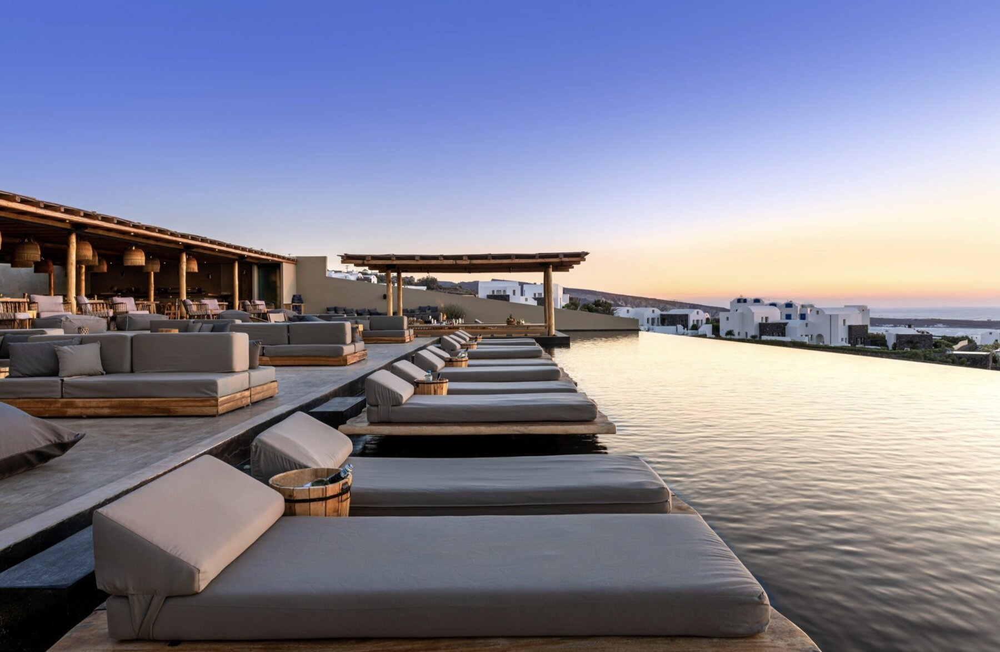
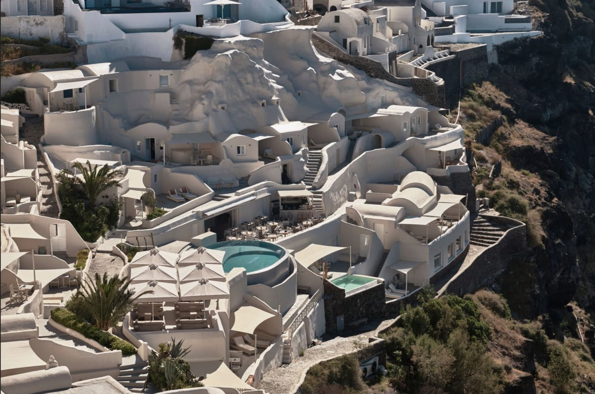
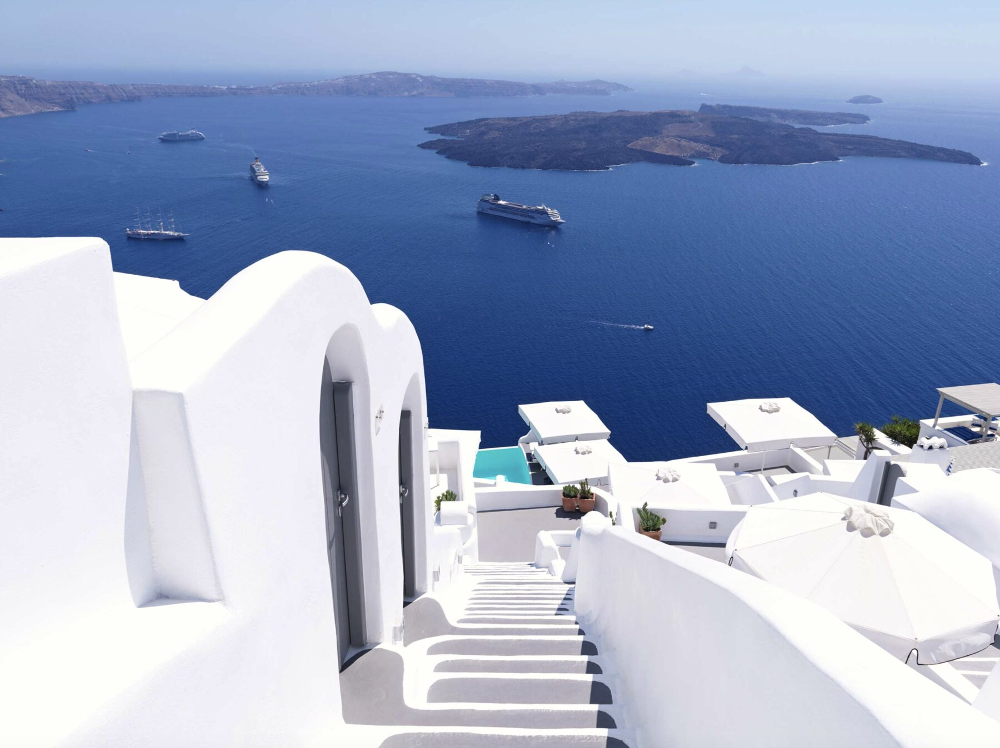

Canaves Oia Suites
The Best Hotel On The Island
Perfect For · First-Time Visitors, Honeymoons, 40+ Couples
For first-time visitors to Santorini, I'd be hard pressed to recommend any other hotel first. Perched high on the Caldera, Canaves Oia Suites was recently completely renovated and blew me away everywhere I looked — the quality of finishes, the privacy (a rarity on Santorini), the private water features, and the landscaping. Set higher on the Caldera than most, you get more privacy, and every room has coverings above the outdoor spaces.
Best spa product on the Caldera. Completely brand new, plus a large gym and easy shuttle access to other Canaves properties.
48 total rooms and villas. Including 3 private 2-3 bedroom villas — a rarity in Oia or Imerovigli.
Not for everyone. There's a 13+ age requirement, and complete privacy simply doesn't exist anywhere on the Caldera.
There's a reason this is the flagship of the Canaves portfolio, and a reason it's the best hotel on the island.

Andronis Boutique Hotel
Perfect For First-Timers
Perfect For · First-Time Visitors, Younger Couples
Andronis Boutique was my #1 pick until I toured Canaves Oia Suites — and it's still a perfect offering for first-time Santorini visitors. Rooms were all renovated in 2024 and are pristine, cave-style rooms with some incredibly unique layouts. Set lower on the Caldera than Oia Suites, there's slightly less privacy, but the property still has coverings over private patios and the rooms felt surprisingly bright for cave-style rooms.
This is what people picture. If you're coming to Santorini for the first time, cave-style rooms are what you're expecting, and Boutique offers some of the best on the island.
Just 23 suites. Feels intimate but still very private, and priced slightly below Andronis Luxury Suites.
Book dinner at Lycabettus immediately. Reserve as soon as you book your room — it's Andronis' famous cliffside restaurant.
I loved the finishes here — lots of marble with beautiful wooden arches, very similar to Oia Suites.

Canaves Epitome
My Favorite Hotel Across 9 Islands
Perfect For · Couples, Privacy Seekers, Design Lovers, Families
This may surprise some, but Canaves Epitome makes an excellent case for being the #1 hotel on Santorini — the only drawback (or benefit, depending on preference) is the location, a short walk from Oia near Ammoudi Bay. If you're returning to Santorini, traveling as a family, or want complete privacy and an actual sunset into the Aegean, this is the best hotel for you.
The gardens feel like a world away. Landscaping behind volcanic-rock walls makes the common areas feel magical and far from the busy streets.
The 2-bedroom suites are the star. Separated by floor with large pools, decks, and outdoor dining — some rooms even sit below the pool with views up into it.
Just 53 rooms, no age restrictions. Still boutique in feel despite being more spread out than the Caldera hotels.
I have to say, Canaves Epitome was my favorite hotel across 9 islands in the Cyclades, and perhaps one of the top 3 stays of my entire life.

Andronis Luxury Suites
Old-School Luxury
Perfect For · 50+ Couples, Anniversary Trips, Mobility-Conscious Travelers
The flagship of the Andronis portfolio is equally beautiful as its younger sibling, Andronis Boutique, though I didn't love it quite as much. It's more exclusive on paper, refined and elegant, but felt a bit more old-school luxury than authentically Santorini. It lends itself well to a 50+ clientele on anniversary trips or returning for the first time since their honeymoon.
Good for mobility concerns. A few suites near check-in have only 15-20 stairs — no need to trek hundreds of stairs to reach your room.
Book Lycabettus immediately. Andronis' famous cliffside restaurant is located here — reserve as soon as you book.
39 total rooms, all spacious. Every room has a water feature — plunge pool, jacuzzi, or full pool in the villas.
Refined and unique in its own right, just slightly less 'authentic Santorini' than Boutique.

Canaves Ena
The OG Of The Canaves Portfolio
Perfect For · Value Seekers, Social Travelers
Started in the 80s by the same family running it today, Ena is a little more minimalist than its younger siblings, and the size — just 18 suites — makes it feel very intimate. A 2024 renovation brought it up to date beautifully. Rooms are slightly smaller than Oia Suites, and not every room has a water feature like Andronis properties do.
The swim-up bar is a highlight. A fun social addition on an island where couples tend to keep to themselves.
Sits higher on the Caldera. Like Oia Suites, that means more privacy than other Caldera offerings.
Rates are close to Andronis Boutique. Despite being positioned as the value option, I find the pricing almost always lands the same.
The team here, especially longtime sales director Des, is a big reason I trust sending clients to this property.

Andronis Concept
Best For Wellness
Perfect For · Wellness Travelers, 4+ Night Stays, Design Lovers
Set near, but not in, Imerovigli, Concept is genuinely different from the rest of this list. It has the nicest spa I saw on Santorini — maybe in the Cyclades. Rooms are generous, feel very private, and the architecture breaks from the traditional white cave look with warm, earthy modern tones that blend into the volcanic landscape.
Some rooms sit on the walking path. Not all, but a few have the Fira-to-Oia trail passing right in front — worth checking before booking.
Just 28 suites and villas. Still feels boutique despite having some of the island's best wellness facilities.
Andronis steers families toward Arcadia instead. Concept is family-friendly, but Arcadia's resort feel is the better fit for that group.
If this property were located in Oia instead, it'd probably be competing for one of my top three spots.

Grace Hotel
Loved The Rooms, Struggled With The Price
Perfect For · Honeymooners Comfortable Outside Oia
I wanted to love Grace more than I did. Set way up on the Caldera in Imerovigli, you're sometimes literally above the fog line — a genuinely unique feeling, and ideal for honeymooners okay with being outside Oia. The room design is simple, white, and elegant, and surprisingly bright for Santorini.
Privacy is inconsistent. Some rooms sit right on the Fira-to-Oia walking path, so strangers pass in front of your private plunge pool.
Skip the indoor hot tub rooms. One of the top categories smells strongly of chlorine as soon as you walk in — I'd steer clients away from it.
Dining is exceptional. Michelin-starred chef Lefteris Lazarou personally visits tables, and the food felt distinctly Greek yet modern.
A fantastic option, but at this price point, there are better choices on Santorini — until rates come down, I'd look elsewhere first.

Andronis Arcadia
A Different Vibe
Perfect For · Families, Younger Couples, Scene-Seekers
Fantastic in theory, but not quite for me — Arcadia has Pacman and Beefbar on property, two very Mykonos-esque dining options that bring in a different vibe and clientele than the rest of this list. The location is similar to Canaves Epitome, right next door, with beautiful sunset-facing rooms and very private layouts.
It's massive and spread out. You'll want a golf cart to get around in summer heat if there's no Meltemi wind.
114 rooms, resort-style feel. This reads more as a true resort than a boutique hotel — great for families.
All rooms have private pools. Including some of the largest on the island.
Great if you like a bit of a scene; not the move if you want exclusivity and quiet.

Mystique
In Need Of A Renovation
Perfect For · Marriott Bonvoy Redemptions
Of all the hotels I toured on Santorini, I was most let down by Mystique — a bummer given how much I love the Empiria Group team behind some of the best hotels in the Cyclades. The rooms had little to no privacy and felt bland and under-decorated; even the largest room I toured had oddly empty spaces that needed furniture.
A significant share of guests are on points. I was told 35-45% of stays are Bonvoy redemptions, which may explain the pricing strategy.
The cave rooms run dark. Combined with the sparse decor, some rooms feel almost echoey.
Worth a renovation. The bones and location are good — the property just needs updated finishes to justify the price.
I'd probably only send Bonvoy enthusiasts here for now — otherwise there are better options.

Katikies Portfolio (3 Hotels)
Beautiful Setting, Dated Execution
Perfect For · None — Until Renovated
I was really not impressed by Katikies and found their entire portfolio stuck sometime in the early 2010s. The setting across all 3 Caldera properties is undeniably beautiful, and the spa at Pelagos House is expansive and impressive, but the hotels themselves need to be completely updated — new finishes, decor, furniture.
No coverings over the patios. That lends itself to an overall lack of privacy compared to Andronis or Canaves.
The furniture needs an update. Some pieces looked like they belonged at your grandmother's house, not a 5-star Santorini stay.
There's real potential here. If Katikies follows Andronis and Canaves in continuous renovation, they could compete again.
Until then, spend $100-$200 more per night and stay at one of the options above instead.